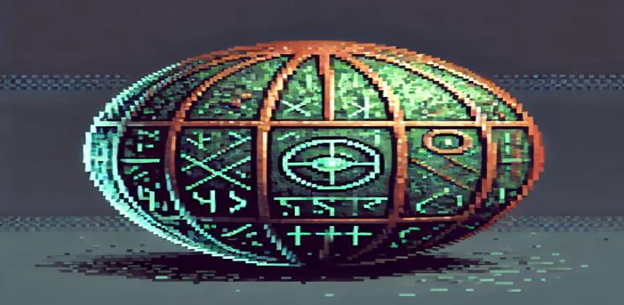
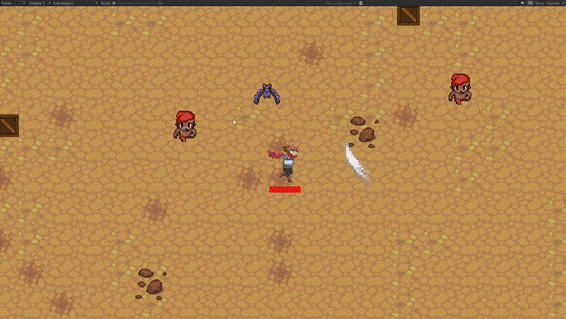
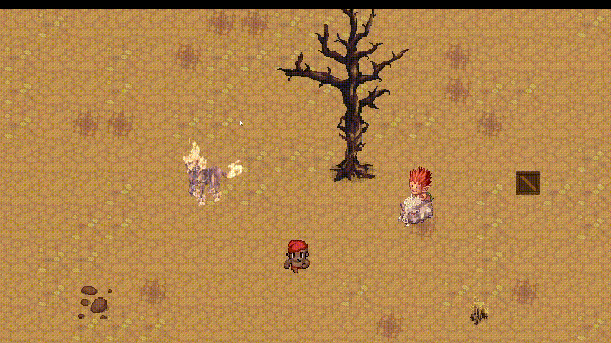

Resumo:
Criaturas do folclore brasileiro estão atacando a cidade de Aldirá! Somente Fabiano, um caçador de monstros, e sua parceira Vitoria podem salvar a cidade e seus habitantes e desvendar os mistérios por trás dos acontecimentos.
Criaturas do folclore brasileiro estão atacando a cidade de Aldirá! Somente Fabiano, um caçador de monstros, e sua parceira Vitoria podem salvar a cidade e seus habitantes e desvendar os mistérios por trás dos acontecimentos.
O ano é 1920, na cidade de Andirá, interior nordestino, onde uma seca rotineira é interrompida por notícias de um tesouro escondido, espalhadas por um estranho homem pálido. A cidade entra em frenesi ao encontrar uma misteriosa esfera de bronze. Estranhos acontecimentos começam, e criaturas folclóricas passam a assombrar os cidadãos. Fabiano e Vitória, místicos e caçadores de artefatos, chegam à cidade para investigar e defender a população.
Controle Fabiano em sua missão de defender Vitoria por três dias, num jogo inspirado em Vampire Survivors, onde o jogador deve lutar contra hordas de monstros que querem destruí-lo! Fabiano está equipado com sua pistola e facão, que ficam cada vez mais poderosos à medida que o jogador derrota seus inimigos.
O jogador deverá enfrentar criaturas do folclore brasileiro, que foram invocadas do imaginário do povo de Andirá.
